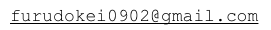

昨今、様々なコンテンツなどがあふれる混沌とした世界で、われら職人チーム『古：時計』はこの世に必要な笑いを皆様に届け、そして心から熱くなれるモノを作っていくことをコンセプトとし、個性のあるキャラの賑やかな掛け合いや心の底から笑える明るく楽しいストーリーをこの世のニーズに合わせながら作品を作っています。
そうこの世は最高のショウなのである。色々面白いと思った事をとにかくやってみる。ユーザーも様々な考えがある中で、阿呆な事を本気でやるこれぞショウ。最高のパフォーマンスを身体いっぱいを使ってみせていきます。
本気の阿呆の殴り合い。本気で変態をやる心。本気のロリコンが作るセカイ。こんな奴らが作る本気のパフォーマンスをぜひ見てください。そしていつまでもコンセプトが変わらない集団を目指しています。
代表 フルにゃん
本サークルについてのお問い合わせは、こちらへお願いします。
当サイトはリンクフリーとなっております。ＵＲＬは(http://furudokei.net/)で宜しくお願い致します。相互リンクして下さるブログや様々なHPを募集中です！
※どんなサイトでもかまいません！ぜひ相互リンクをお願いします！
古：時計は、二次創作物に関しまして一切制限を行っておりません。